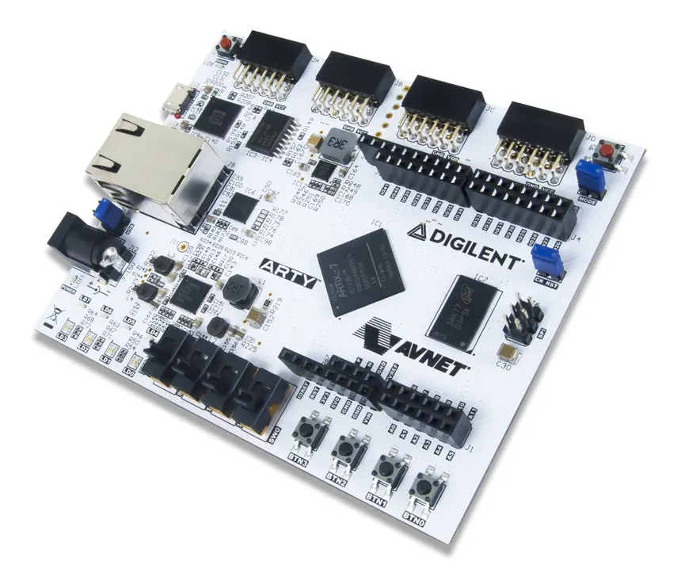

Auteurs :
Corentin KERVAGORET ‚Ä¢ Arnaud GRIVEL ‚Ä¢ Mathias BENOIT üòÑ
Ce projet consiste à réaliser un mini-jeu de type Megamind sur la carte ARTY A7 en utilisant les huit LEDs du microcontrôleur.

sudo apt install ghdl gtkwave)Clone le dépôt :
git clone https://github.com/Corentin-k/VHDL-LogiGame.git
cd VHDL-LogiGame
Simule un module avec le script fourni :
Dans le dossier racine du projet.
Lancer :
./run_vhdl.sh nom_module
Par exemple pour tester le vérificateur de résultat :
./run_vhdl.sh verif_resultat
Pour ouvrir automatiquement GTKWave (visualisation des signaux) :
./run_vhdl.sh verif_resultat --g
L'ALU (Arithmetic and Logic Unit) est l'unité de calcul du microcontroleur. Il est capable de réaliser des opérations arithmétiques et logiques sur des entiers de 8 bits. Elle est composée de plusieurs unités fonctionnelles, chacune étant responsable d'une opération spécifique. L'ALU est contrôlée par un signal de sélection qui détermine quelle opération doit être effectuée sur les entrées.
Hearth_UALentity hearth_ual is
port(
A : in std_logic_vector(3 downto 0);
B : in std_logic_vector(3 downto 0);
SR_IN_L : in std_logic; -- bit de retenue d'entrée pour décalage à droite
SR_IN_R : in std_logic; -- bit de retenue d'entrée pour décalage à gauche et addition
SEL_FCT : in std_logic_vector(3 downto 0); -- SEL_FCT est le code de la fonction à réaliser
SR_OUT_L : out std_logic; -- bit de retenue de sortie gauche
SR_OUT_R : out std_logic; -- bit de retenue de sortie droite
S : out std_logic_vector(7 downto 0) -- résultat ALU 8 bits
);
end hearth_ual;
L'ALU est capable de réaliser les opérations suivantes :
| Code | Opération |
|---|---|
| 0000 | nop |
| 0001 | A |
| 0010 | B |
| 0011 | not A |
| 0100 | not B |
| 0101 | A and B |
| 0110 | A or B |
| 0111 | A xor B |
| 1000 | Décalage à droite A |
| 1001 | Décalage à gauche A |
| 1010 | Décalage à droite B |
| 1011 | Décalage à gauche B |
| 1100 | A+B avec retenue |
| 1101 | A+B |
| 1110 | A-B |
| 1111 | A*B |
On a également créé des variables internes pour :
Étendre A et B de 4 à 8 bits (grand_A, grand_B)
Stocker les retenues d’entrée et de sortie (carry_in_left, carry_out_right, etc.)
Construire le résultat 8 bits (resultat)
-- Variables internes
variable grand_A : std_logic_vector(7 downto 0);
variable grand_B : std_logic_vector(7 downto 0);
variable carry_in_left : std_logic;
variable carry_in_right : std_logic;
variable carry_out_left : std_logic;
variable carry_out_right : std_logic;
variable resultat : std_logic_vector(7 downto 0);
Pour valider le bon fonctionnement de l’ALU, nous avons développé un testbench VHDL complet.
Pour ce faire nous avons utilisé des procédures en VHDL pour balayer toutes les combinaisons possibles de l'ALU : display_case(name:string) et test_case(name:string)
procedure display_case(name : string) is
begin
report "Test: " & name & " | A=" & integer'image(to_integer(unsigned(A_sim))) &
" B=" & integer'image(to_integer(unsigned(B_sim))) &
" SR_IN_L=" & std_logic'image(SR_IN_L_sim) &
" SR_IN_R=" & std_logic'image(SR_IN_R_sim) &
" SEL_FCT=" & integer'image(to_integer(unsigned(SEL_sim))) &
" S=" & integer'image(to_integer(unsigned(S_sim))) &
" SR_OUT_L=" & std_logic'image(SR_OUT_L_sim) &
" SR_OUT_R=" & std_logic'image(SR_OUT_R_sim);
end procedure;
procedure test_case(
signal_name : string;
sel_val : std_logic_vector(3 downto 0);
a_val, b_val : std_logic_vector(3 downto 0);
sr_in_l, sr_in_r : std_logic;
expected_S : std_logic_vector(7 downto 0);
expected_L, expected_R : std_logic := '0'
) is
begin
SEL_sim <= sel_val;
A_sim <= a_val;
B_sim <= b_val;
SR_IN_L_sim <= sr_in_l;
SR_IN_R_sim <= sr_in_r;
wait for 10 ns;
display_case(signal_name);
assert S_s = expected_S report signal_name & ": S incorrect" severity error;
assert SR_OUT_L_s = expected_L report signal_name & ": SR_OUT_L incorrect" severity error;
assert SR_OUT_R_s = expected_R report signal_name & ": SR_OUT_R incorrect" severity error;
end procedure;
Ici nous avons un exemple de test de l'ALU : sel_s = "0110" se qui correspond à l'opération A or B. On peut voir que le résultat est bien le bon. A vaut 4 soit 0100 et B vaut 3 soit 0011. Le résultat est donc 0111 soit 7.
Ou directement par les asserts :
ghdl -r --std=08 --ieee=synopsys ual_testbench --wave=ual_testbench.ghw
hearth_ual_testbench.vhd:50:13:@10ns:(report note): Test: NOP | A=0 B=0 SR_IN_L='0' SR_IN_R='0' SEL_FCT=0 S=0 SR_OUT_L='0' SR_OUT_R='0'
hearth_ual_testbench.vhd:50:13:@20ns:(report note): Test: S=A | A=2 B=0 SR_IN_L='0' SR_IN_R='0' SEL_FCT=1 S=2 SR_OUT_L='0' SR_OUT_R='0'
hearth_ual_testbench.vhd:50:13:@30ns:(report note): Test: S=B | A=0 B=3 SR_IN_L='0' SR_IN_R='0' SEL_FCT=2 S=3 SR_OUT_L='0' SR_OUT_R='0'
R='0'
hearth_ual_testbench.vhd:50:13:@60ns:(report note): Test: S=A and B | A=6 B=5 SR_IN_L='0' SR_IN_R='0' SEL_FCT=5 S=4 SR_OUT_L='0' SR_OUT_R='0'
hearth_ual_testbench.vhd:50:13:@70ns:(report note): Test: S=A or B | A=4 B=3 SR_IN_L='0' SR_IN_R='0' SEL_FCT=6 S=7 SR_OUT_L='0' SR_OUT_R='0'
hearth_ual_testbench.vhd:50:13:@80ns:(report note): Test: S=A xor B | A=7 B=2 SR_IN_L='0' SR_IN_R='0' SEL_FCT=7 S=5 SR_OUT_L='0' SR_OUT_R='0'
hearth_ual_testbench.vhd:50:13:@90ns:(report note): Test: Shift droit A | A=10 B=0 SR_IN_L='1' SR_IN_R='0' SEL_FCT=8 S=13 SR_OUT_L='0' SR_OUT_R='0'
hearth_ual_testbench.vhd:50:13:@100ns:(report note): Test: Shift gauche A | A=12 B=0 SR_IN_L='0' SR_IN_R='1' SEL_FCT=9 S=9 SR_OUT_L='1' SR_OUT_R='0'
hearth_ual_testbench.vhd:50:13:@110ns:(report note): Test: Shift droit B | A=0 B=6 SR_IN_L='1' SR_IN_R='0' SEL_FCT=10 S=11 SR_OUT_L='0' SR_OUT_R='0'
hearth_ual_testbench.vhd:50:13:@120ns:(report note): Test: Shift gauche B | A=0 B=3 SR_IN_L='0' SR_IN_R='1' SEL_FCT=11 S=7 SR_OUT_L='0' SR_OUT_R='0'
hearth_ual_testbench.vhd:50:13:@130ns:(report note): Test: Addition A+B+SR_IN_R | A=2 B=3 SR_IN_L='0' SR_IN_R='1' SEL_FCT=12 S=6 SR_OUT_L='0' SR_OUT_R='0'
hearth_ual_testbench.vhd:50:13:@140ns:(report note): Test: Addition A+B | A=4 B=2 SR_IN_L='0' SR_IN_R='0' SEL_FCT=13 S=6 SR_OUT_L='0' SR_OUT_R='0'
hearth_ual_testbench.vhd:50:13:@150ns:(report note): Test: Soustraction A-B | A=7 B=3 SR_IN_L='0' SR_IN_R='0' SEL_FCT=14 S=4 SR_OUT_L='0' SR_OUT_R='0'
hearth_ual_testbench.vhd:110:9:@150ns:(report note): Tous les tests passés avec succès.

buffer_cmdLe buffer de commande permet de mémoriser les signaux de sélection de fonction (SEL_FCT) et de routage (SEL_ROUTE) à chaque front montant de l’horloge.
entity buffer_cmd is
port (
e1 : in std_logic_vector(3 downto 0);
reset : in std_logic;
clock : in std_logic;
s1 : out std_logic_vector(3 downto 0)
);
end buffer_cmd;
clock, si reset n'est pas actif, la valeur d'entrée e1 est stockée et disponible sur s1.buffer_ualLe bufferUAL permet de mémoriser des données sur 4 ou 8 bits (pour Buffer_A, Buffer_B, MEM_CACHE_1, MEM_CACHE_2).
entity buffer_ual is
generic (
N : integer := 4
);
port (
e1 : in std_logic_vector(N-1 downto 0);
reset : in std_logic;
clock : in std_logic;
enable : in std_logic;
s1 : out std_logic_vector(N-1 downto 0)
);
end buffer_ual;
enable.clock, si enable='1', la valeur d'entrée e1 est stockée et disponible sur s1.L'interconnexion est responsable de la gestion des données entre les différentes unités de l'ALU. Elle permet de sélectionner les entrées et les sorties des différentes unités en fonction du signal de sélection.
interconnexionentity interconnexion is
port(
-- SEL_ROUTE permet de définir le transfert de données qui sera effectué lors du prochain cycle horloge (prochain front montant de l’horloge).
SEL_ROUTE : in std_logic_vector(3 downto 0); -- Sélecteur de route
A_IN : in std_logic_vector(3 downto 0); -- Entrée A
B_IN : in std_logic_vector(3 downto 0); -- Entrée B
S : in std_logic_vector(7 downto 0); -- Entrée S
MEM_CACHE_1_in: in std_logic_vector(7 downto 0); -- Mémoire cache 1
MEM_CACHE_1_out_enable : out std_logic; -- Signal d'activation pour MEM_CACHE_1_ou
MEM_CACHE_1_out : out std_logic_vector(7 downto 0); -- Sortie vers MEM_CACHE_1_out
MEM_CACHE_2_in : in std_logic_vector(7 downto 0); -- Mémoire cache 2
MEM_CACHE_2_out_enable : out std_logic; -- Signal d'activation pour MEM_CACHE_2_out_enable
MEM_CACHE_2_out : out std_logic_vector(7 downto 0); -- Sortie vers MEM_CACHE_2_out
-- Les mémoires Buffer_A, Buffer_B permettent de stocker les données directement liées au cœur de l’UAL, c'est-à-dire à la sous-fonction arithmétique et logique.
-- Elles seront chargées (activées sur front montant de l’entrée clk) suivant les valeurs de l’entrée SEL_ROUTE
Buffer_A : out std_logic_vector(3 downto 0); -- Sortie vers Buffer A
Buffer_A_enable : out std_logic; -- Signal d'activation pour Buffer A
Buffer_B : out std_logic_vector(3 downto 0); -- Sortie vers Buffer B
Buffer_B_enable : out std_logic; -- Signal d'activation pour Buffer B
SEL_OUT : in std_logic_vector(1 downto 0); -- Sélecteur de sortie
RES_OUT : out std_logic_vector(7 downto 0) -- Sortie
);
end interconnexion;
Fichier de test : interconnexion_testbench.vhd
./run_vhdl.sh interconnexion
interconnexion_testbench.vhd:86:9:@10ns:(report note): A_IN = 10 Buffer_A: 10
interconnexion_testbench.vhd:93:9:@20ns:(report note): S = 1 MEM_CACHE_1_out: 1
interconnexion_testbench.vhd:102:9:@30ns:(report note): S = 3 RES_OUT: 3
L'interconnexion permet ainsi de réaliser les opérations suivantes :
A -> Buffer_A
MEM_CACHE_1 -> Buffer_A (4 bits de poids faible)
MEM_CACHE_1 -> Buffer_A (4 bits de poids fort)
MEM_CACHE_2 -> Buffer_A (4 bits de poids faible)
MEMCACHE_2 -> BufferA (4 bits de poids fort)
S -> Buffer_A (4 bits de poids faible)
S -> Buffer_A (4 bits de poids fort)
B -> Buffer_B
MEM_CACHE_1 -> Buffer_B (4 bits de poids faible)
MEM_CACHE_1 -> Buffer_B (4 bits de poids fort)
MEM_CACHE_2 -> Buffer_B (4 bits de poids faible)
MEM_CACHE_2 -> Buffer_B (4 bits de poids fort)
S -> Buffer_B (4 bits de poids faible)
S -> Buffer_B (4 bits de poids fort)
S -> MEM_CACHE_1_in
S -> MEM_CACHE_2_in
mem_instructionsLa mémoire d’instructions contient le programme à exécuter (suite d’instructions codées sur 10 bits).
entity mem_instructions is
port (
clk : in std_logic;
reset : in std_logic;
instruction : in unsigned(6 downto 0); -- Adresse (7 bits)
donnee : out std_logic_vector(9 downto 0) -- Instruction lue
);
end mem_instructions;
Fonctionnement : À chaque front montant de clk, l’instruction à l’adresse instruction est placée sur donnee.
Fichier de test : mem_instructions_testbench.vhd
coco@MSI:/mnt/c/Users/ckerv/OneDrive - Efrei/EFREI/L3/Semestre 6/VHDL2/mem_instructions$ ./mem.sh
mem_instructions_testbench.vhd:225:9:@47ns:(report note): RES_OUT = 6
mem_instructions_testbench.vhd:245:5:@147ns:(report note): RES_OUT (A+B xnor A) = 2
mem_instructions_testbench.vhd:260:5:@237ns:(report note): RES_OUT (A0 and B1) or (A1 and B0) = 1

Le module minuteur permet de gérer le temps imparti pour répondre à chaque question.
Minuteurentity Minuteur is
port (
clk : in std_logic;
reset : in std_logic;
start : in std_logic;
sw_level : in std_logic_vector(1 downto 0);
time_out : out std_logic
);
end Minuteur;
sw_level (niveau de difficulté).time_out passe à '1' lorsque le temps est écoulé.Le module score_compteur gère le score du joueur.
score_compteurentity score_compteur is
port (
clk : in std_logic; -- horloge système
reset : in std_logic; --remise à zéro du score
valid_hit : in std_logic; -- indiquant la réussite (1) ou l’échec (0)
score : out std_logic_vector(3 downto 0); -- score courant codé sur 4 bits
game_over : out std_logic -- signal indiquant la fin du jeu
);
end score_compteur;
valid_hit = '1').game_over passe à '1' lorsque le score atteint 15.Le module verif_resultat valide si le joueur a appuyé sur le bon bouton dans le temps imparti.
verif_resultatentity verif_resultat is
port (
clk : in std_logic; -- horloge système
reset : in std_logic; -- réinitialisation du module
timeout : in std_logic; -- signal de fin de délai
led_color : in std_logic_vector(2 downto 0); -- couleur affichée sur LD3 (3 bits, R=100, G=010, B=001)
btn_r : in std_logic; -- boutons de réponse (BTN1, BTN2, BTN3)
btn_g : in std_logic;
btn_b : in std_logic;
valid_hit : out std_logic -- passe à '1' si la bonne réponse a été donnée dans les temps
);
end verif_resultat;
valid_hit passe à '1' uniquement si le bon bouton est pressé avant le timeout.Le module LFSR (Linear Feedback Shift Register) génère une séquence pseudo-aléatoire de 4 bits, utilisée pour le choix aléatoire des couleurs.
lfsrentity lfsr is
port(
CLK100MHZ : in std_logic; -- horloge principale (100 MHz)
reset : in std_logic; -- réinitialisation du registre à une valeur initiale non nulle «1011»
enable : in std_logic; -- active l’évolution du LFSR à chaque front montant
rnd : out std_logic_vector(3 downto 0) -- vecteur de 4 bits représentant la valeur pseudo-aléatoire courante
);
end lfsr;
enable='1', la sortie rnd change selon le polynôme X⁴ + X³ + 1."1011" pour éviter la séquence nulle.Le module FSM (Finite State Machine) orchestre l’ensemble du jeu LogiGame : il gère la génération du stimulus, le lancement du timer, la vérification de la réponse, l’incrémentation du score et la détection de la fin de partie.
fsmentity fsm is
port (
clk : in std_logic; -- horloge système (100 MHz)
reset : in std_logic; -- remise à zéro globale
start : in std_logic; -- bouton de démarrage
sw_level : in std_logic_vector(1 downto 0); -- niveau de difficulté
btn_r : in std_logic; -- bouton rouge
btn_g : in std_logic; -- bouton vert
btn_b : in std_logic; -- bouton bleu
led_color : out std_logic_vector(2 downto 0); -- couleur affichée sur LD3
score : out std_logic_vector(3 downto 0); -- score courant
game_over : out std_logic -- signal de fin de partie
);
end fsm;

Puis créer un nouveau projet et faire les configurations suivantes :
Créer un projet :
XC7A35TCSG324-1Ajouter les sources :
PRJ_24-25_Entite_TopLevel_Constraints.xdcMCU_PRJ_2025_TopLevel_vide.vhdAjoutez votre entité ALU en tant que composant dans MCU_PRJ_2025_TopLevel_vide :
-- Ajout de votre entité alu en tant que component
signal My_A,My_B, My_SEL_FCT : std_logic_vector(3 downto 0);
signal My_SR_IN_R , My_SR_IN_L, My_SR_OUT_L, My_SR_OUT_R: std_logic;
signal My_S : std_logic_vector(7 downto 0);
begin
MyUALCore : Nom_de_votre_entité
Port Map(
A=>sw,
B =>sw,
SR_IN_L => sw(3),
SR_IN_R=>sw(0),
S=> My_S,
SR_OUT_L=>led3_b,
SR_OUT_R=>led2_b,
SEL_FCT=>btn
);
led <= My_S(7 downto 4);
led0_g <= My_S(0); led0_b <='0';
led1_g <= My_S(1); led1_b <='0'; led1_r <='0';
led2_g <= My_S(2); led2_b <='0';led2_r <='0';
led3_g <= My_S(3); led3_b <='0';led3_r <='0';
end MCU_PRJ_2021_TopLevel_Arch;